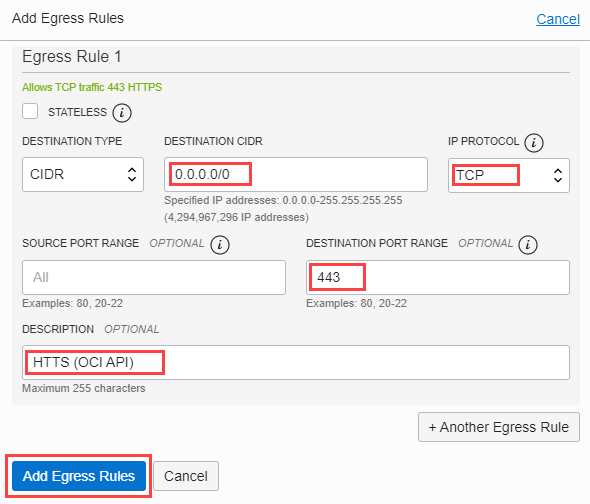

OKE 관리용 Bastion Server 구축
by Velucid ⏲ May 18, 2021
Topics
OCI OKE(Oracle Kubernetes Engine) 따라하기
OCI OKE 운영을 위한 기본 환경 구성
OCI OKE에 애플리케이션 배포하기
내용 설명
K8S Cluster를 관리할 Bastion 서버를 구축하는 과정을 보여드립니다. Bastion 서버에는 OCI CLI를 설치하여 API Key 인증을 통해 OCI를 관리할 수 있도록 합니다. 또한, OCI Kubernetes Cluster를 관리하기 위한 환경을 설정합니다. 안전한 보안을 위해서 별도의 Subnet 생성한 후, 여기에 Bastion 서버를 운영하며, Security List를 통해 최소한의 네트워크 경로를 통해 접근을 통제합니다.
1) Bastion 서버 용 Security List 생성
먼저, Bastion 서버에 접근 가능한 SSH 및 OCI/K8S Cluster Endpoint들과 통신이 가능하도록 HTTPS 접근을 허용하기 위한 Security List를 생성합니다.
먼저, K8S Cluster Detail 페이지에서 Cluster가 속한 VCN 이름을 클릭합니다. ✔️

- 왼쪽 하단 메뉴 Security Lists 선택 > Create Security List 클릭 ✔️
- Security List 이름을 입력한 후, Create Security List 클릭 ✔️
- 생성된 Security List 클릭 ✔️

- Add Ingress Rules 클릭 ✔️
외부 인터넷에서 SSH 접근을 허용하기 위한 Ingress Rule을 생성합니다.
- SOURCE CIDR : 0.0.0.0/0 (인터넷으로 부터의 접속)
- IP PROTOCOL : SSH (TCP/22)
- 생성된 SSH 룰 확인
- Add Egress Rules 클릭
OCI 및 OKE Cluster 접근을 위한 Egress Rule들을 생성합니다.
Destination CIDR Protocol Destination Port Description 0.0.0.0/0 SSH(TCP/22) 22 SSH Access 0.0.0.0/0 TCP 80 HTTP 0.0.0.0/0 TCP 443 HTTPS (OCI API) 0.0.0.0/0 TCP 6443 kubectl 0.0.0.0/0 ICMP 3,4 PING - SSH (TCP/22)
- HTTP (TCP/80)
- HTTPS (TCP/443)

- KUBECTL (TCP/6443)
- ICMP (TCP/3,4)
Egress Rule 확인
2) Subnet 생성
Bastion 서버 용 Subnet을 생성하는 과정을 보여줍니다.
OKE Cluster 생성과 함께 자동으로 만들어진 Public Routetable을 설정하여 Internet Gateway를 통해 외부 접근이 가능하도록 하며, 전 단계에서 생성한 Security List를 등록합니다.
- Cluster Detail 페이지에서 VCN 클릭 ✔️
- 왼쪽 하단 메뉴 Subnets 선택 > Create Subnet 클릭 ✔️
Subnet 정보 입력
Parameter Value Description Name ks8-bastion-subnet Subet 이름 입력 Subet Type Regional Regional Subnet 선택 CIDR Block 10.0.30.0/24 기존 OKE CIDR와 충돌 주의 Route Table OKE Public Routetable OKE에서 생성한 Public 선택 Subet Access Public Subnet 인터넷 접근이 가능하도록 선택
Subnet 정보 입력(계속) 및 생성
Parameter Value Description DNS Label ks8bastion DNS Label 입력 DHCP Option OKE Default DHCP Optuion OKE의 기본 옵션 선택 Security Lists k8s-bastion-seclist 전 단계에서 생성한 Security List 선택
3) Compute VM 생성
전 단계에서 생성한 Bastion 전용 subnet에 Compute VM을 배포합니다.
- Compute Instance 페이지로 이동합니다.
- Create Instance 클릭 ✔️
- Compute Instance 이름 입력
OS Image 및 Shape 선택
- Oracle Linux
- 최소 리소스 구성: E4 Flex, 1 OCPU/16 GB Mem
Networking 설정
- K8S Cluster 생성 시 자동 생성된 VCN 선택
- Bastion 전용으로 생성한 Subnet 선택
- Public IP 할당 선택 (퍼블릭망 접속용)
SSH 접근 Key 생성 및 다운로드
- Generate SSH key pair를 선택한 후, Private Key와 Public Key를 다운로드합니다.
- Private Key는 Putty에 등록하여 SSH 통신을 연결하는데 사용됩니다.
주의: 해당 페이지 이후에는 다시 다운로드가 불가능합니다.
- Boot Volume: Default
- Compute VM 생성 클릭 ✔️
- Compute 생성 확인
4) Putty 전용 Private Key Conversion
OCI에서 다운 받은 Private Key를 Putty 전용 Private Key로 변환 합니다.
- OCI에서 생성한 Private Key를 puttygen에서 Import
- Private Key를 Putty 전용 Key로 저장
5) Putty 보안 연결 설정
- Bastion 서버에 할당된 Public IP 확인하고 복사합니다.
- Putty의 Host IP로 Bastion 서버의 Public IP를 사용합니다.
- Putty 전용으로 변환한 Private Key를 등록합니다.
- Bastion 서버 접속 정보를 저장합니다.
2-6) Putty 보안 연결 설정 및 연결
- Putty 접속 정보 로딩 및 오픈
- 접속 허용 선택
- opc 사용자로 로그인

참고 자료
OCI Doc Setting Up Cluster Access